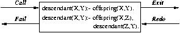

Author(s): D. Cabeza, Manuel C. Rodriguez, (A. Ciepielewski, M. Carlsson, T. Chikayama, K. Shen).
Version: 1.9#342 (2004/4/24, 20:30:39 CEST)
Version of last change: 1.9#188 (2003/12/19, 16:2:3 CET)
The Ciao program development environment includes a number of advanced
debugging tools, such as a
source-level debugger, the
ciaopp preprocessor, and some
execution visualizers. Herein we discuss the interactive debugger available in the standard
top-level, which allows tracing the control flow of programs, in a similar way to other popular Prolog systems. This is a classical Byrd box-type
debugger
[Byr80,BBP81], with some enhancements, most notably being able to track the execution on the source program. We also discuss the
embedded debugger, which is a version of the debugger which can be embedded into executables so that an interactive debugging session can be triggered at any time while running that executable without needing the top-level shell.
Byrd's Procedure Box model of debugging execution provides a simple way of visualising control flow, including backtracking. Control flow is in principle viewed at the predicate level, rather than at the level of individual clauses. The Ciao debugger has the ability to mark selected modules and/or files for debugging (traditional and source debugging), rather than having to exhaustively trace your program. It also allows to selectively set spy-points and breakpoints. Spy-points allow the programmer to nominate interesting predicates at which program execution is to pause so that the programmer can interact with the debugger. Breakpoints are similar to spy-points, but allow pausing at a specific line in the code, corresponding to a particular literal. There is a wide choice of control and information options available during debugging interaction.
Note: While the debugger described herein can be used in a standalone way (i.e., from a operating system shell or terminal window) in the same way as other Prolog debuggers, the most convenient way of debugging Ciao programs is by using the emacs mode (see section Using Ciao inside GNU emacs), i.e., debugging from within the
emacs editor / programming environment.
Usually, when a program is not working properly, the programmer has a feeling of which are the modules where the fault may be. Since full-fledged debugging is only available on interpreted (called
interpreted mode in traditional Prolog systems) modules, which are executed much slower than compiled modules, there is the posibility of telling the top level which particular modules are to be loaded in
interpreted mode, with the aim of debugging them. The simplest way of achieving this is by executing in the Ciao shell prompt, for each suspicious module Module in the program, a command like this:
?- debug_module(Module).
An alternative way of loading a module in interpreted mode exists which will instruct the debugger to keep track of the line numbers in the source file and to report them during debugging. This feature can be selected for a suspicious module Module in the program by executing a command such as:
?- debug_module_source(Module).
This is most useful when running the top-level inside the
emacs editor since in that case the Ciao
emacs mode allows performing full
source-level debugging in each module marked as above, i.e., the source lines being executed will be highlighted dynamically during debugging in a window showing the source code of the module.
Note that all files with no module declaration belong to the pseudo-module user, so the command to be issued for debugging a user file, say foo.pl, would be debug_module(user) or debug_module_source(user), and not debug_module(foo).
The two ways of performing
source-level debugging are fully compatible between them, i.e., Ciao allows having some modules loaded with
debug_module/1 and others with
debug_module_source/1. To change from one interpreted mode to the other mode it suffices to select the module with the new interpreted mode (debugger mode), using the appropiate command, and reload the module.
The commands above perform in fact two related actions: first, they let the compiler know that if a file containing a module with this name is loaded, it should be loaded in interpreted mode (source or traditional). In addition, they instruct the debugger to actually prepare for debugging the code belonging to that module. After that, the modules which are to be debugged have to be (re)loaded so that they are compiled or loaded for interpretation in the appropriate way. The nice thing is that, due to the modular behaviour of the compiler/top-level, if the modules are part of a bigger application, it suffices to load the main module of the application, since this will automatically force the dependent modules which have changed to be loaded in the appropriate way, including those whose loading mode has changed (i.e., changing the loading mode has the effect of forcing the required re-loading of the module at the appropriate time).
Later in the debugging process, as the bug location is isolated, typically one will want to restrict more and more the modules where debugging takes place. To this end, and without the need for reloading, one can tell the debugger to not consider a module for debugging issuing a
nodebug_module/1 command, which counteracts a
debug_module/1 or
debug_module_source/1 command with the same module name, and reloading it (or the main file).
There are also two top-level commands
set_debug_mode/1 and
set_nodebug_mode/1, which accept as argument a file spec (i.e., library(foo) or foo, even if it is a user file) to be able to load a file in interpreted mode without changing the set of modules that the debugger will try to spy.
Once modules or user files are marked for debugging and reloaded, the traditional debugging shell commands can be used (the documentation of the
debugger library following this chapter contains all the commands and their description), with the same meaning as in other classical Prolog systems. The differences in their behavior are:
nospy/1 and
spy/1 accept sequences of predicate specs, and they will search for those predicates only in the modules marked for debugging (traditional or source-level debugging).
breakpt/6 and
nobreakpt/6 allow setting breakpoints at selected clause literals and will search for those literals only in the modules marked for
source-level debugging (modules marked with
debug_module_source/1).
In particular, the system is initially in
nodebug mode, in which no tracing is performed. The system can be put in
debug mode by a call to
debug/0 in which execution of queries will proceed until the first spy-point or breakpoint. Alternatively, the system can be put in
trace mode by a call to
trace/0 in which all predicates will be trace.
The embedded debugger, as the interpreted debugger, has three different modes of operation: debug, trace or nodebug. These debuggers modes can be set by adding a package declaration in the module, as follows:
:- use_package(debug). :- use_package(trace). :- use_package(nodebug).
and recompiling the application.
In order to debug, or trace, correctly the complete code these declarations must appear the last ones of all
use_package declarations used. Also it is possible, as usual, to add the debugging package(s) in the module declaration using the predicate
module/3 (and they should also be the last ones).
The embedded debugger has limitations over the interpreted debugger. The most important is that the "retry" option is not available. But it is possible to add, and remove,
spy-points and
breakpoins using the predicates
spy/1,
nospy/1,
breakpt/6 and
nobreakpt/6, etc. These can be used in a clause declaration or as declarations. Also it is possible to add in the code predicates for issuing the debugger (i.e., use debug mode, and in a clause add the predicate
trace/1).
The nodebug mode allows keeping the spy-points and breakpoints in the code instead of removing them from the code.
Note that there is a particularly interesting way of using the
embedded debugger: if an application is run in a shell buffer which has been set with Ciao inferior mode (M-x ciao-inferior-mode) and this application starts emitting output from the embedded debugger (i.e., which contains the embedded debugger and is debugging its code) then the Ciao emacs mode will be able to follow these messages, for example tracking execution in the source level code. This also works if the application is written in a combination of languages, provided the parts written in Ciao are compiled with the embedded debugger package and is thus a covenient way of debugging multi-language applications. The only thing needed is to make sure that the output messages appear in a shell buffer that is in Ciao inferior mode.
See the following as a general example of use of the embedded debugger:
:- module( foo,[main/1],[assertions, debug]).
:- entry main/1.
main(X) :-
display(X),
spy(foo),
foo(X),
notrace,
nl.
foo([]).
foo([X|T]) :-
trace,
bar(X),
foo(T).
bar(X) :-
display(X).
During debugging the interpreter prints out a sequence of goals in various states of instantiation in order to show the state that the program has reached in its execution. However, in order to understand what is occurring it is necessary to understand when and why the interpreter prints out goals. As in other programming languages, key points of interest are procedure entry and return, but in Prolog there is the additional complexity of backtracking. One of the major confusions that novice Prolog programmers have to face is the question of what actually happens when a goal fails and the system suddenly starts backtracking. The Procedure Box model of Prolog execution views program control flow in terms of movement about the program text. This model provides a basis for the debugging mechanism in the interpreter, and enables the user to view the behaviour of the program in a consistent way. It also provides the basis for the visualization performed on the source level program when source level program when
source-level debugging is activated within
emacs.
Let us look at an example Prolog procedure:

The first clause states that Y is a descendant of X if Y is an offspring of X, and the second clause states that Y is a descendant of X if Z is an offspring of X and Y is a descendant of Z. In the diagram a box has been drawn around the whole procedure and labelled arrows indicate the control flow in and out of this box. There are four such arrows which we shall look at in turn.
descendant(X,Y) is required to be satisfied, control passes through the Call port of the descendant box with the intention of matching a component clause and then satisfying any subgoals in the body of that clause. Note that this is independent of whether such a match is possible; i.e. first the box is called, and then the attempt to match takes place. Textually we can imagine moving to the code for descendant when meeting a call to descendant in some other part of the code.
In terms of this model, the information we get about the procedure box is only the control flow through these four ports. This means that at this level we are not concerned with which clause matches, and how any subgoals are satisfied, but rather we only wish to know the initial goal and the final outcome. However, it can be seen that whenever we are trying to satisfy subgoals, what we are actually doing is passing through the ports of their respective boxes. If we were following this (e.g., activating source-level debugging), then we would have complete information about the control flow inside the procedure box.
Note that the box we have drawn around the procedure should really be seen as an invocation box. That is, there will be a different box for each different invocation of the procedure. Obviously, with something like a recursive procedure, there will be many different Calls and Exits in the control flow, but these will be for different invocations. Since this might get confusing each invocation box is given a unique integer identifier in the messages, as described below.
Note that not all procedure calls are traced; there are a few basic predicates which have been made invisible since it is more convenient not to trace them. These include debugging directives, basic control structures, and some builtins. This means that messages will never be printed for these predicates during debugging.
This section explains the two formats of the message output by the debugger at a port. All trace messages are output to the terminal regardless of where the current output stream is directed (which allows tracing programs while they are performing file I/O). The basic format, which will be shown in traditional debug and in source-level debugging within Ciao
emacs mode, is as follows:
S 13 7 Call: T user:descendant(dani,_123) ?
S is a spy-point or breakpoint indicator. It is printed as '+', indicating that there is a spy-point on descendant/2 in module user, as 'B' denoting a breakpoint, or as ' ', denoting no spy-point or breakpoint. If there is a spy-point and a breakpoint in the same predicate the spy-point indicator takes preference over breakpoint indicator.
T is a subterm trace. This is used in conjunction with the ^ command (set subterm), described below. If a subterm has been selected, T is printed as the sequence of commands used to select the subterm. Normally, however, T is printed as ' ', indicating that no subterm has been selected.
The first number is the unique invocation identifier. It is always nondecreasing (provided that the debugger is switched on) regardless of whether or not the invocations are being actually seen. This number can be used to cross correlate the trace messages for the various ports, since it is unique for every invocation. It will also give an indication of the number of procedure calls made since the start of the execution. The invocation counter starts again for every fresh execution of a command, and it is also reset when retries (see later) are performed.
The number following this is the current depth; i.e., the number of direct ancestors this goal has. The next word specifies the particular port (Call, Exit, Redo or Fail). The goal is then printed so that its current instantiation state can be inspected. The final ? is the prompt indicating that the debugger is waiting for user interaction. One of the option codes allowed (see below) can be input at this point.
The second format, quite similar to the format explained above, is shown when using source-level debugging outside the Ciao
emacs mode, and it is as follows:
In /home/mcarlos/ciao/foo.pl (5-9) descendant-1 S 13 7 Call: T user:descendant(dani,_123) ?
This format is identical to the format above except for the first line, which contains the information for location of the point in the source program text where execution is currently at. The first line contains the name of the source file, the start and end lines where the literal can be found, the substring to search for between those lines and the number of substrings to locate. This information for locating the point on the source file is not shown when executing the source-level debugger from the Ciao
emacs mode.
Ports can be "unleashed" by calling the
leash/1 predicate omiting that port in the argument. This means that the debugger will stop but user interaction is not possible for an unleashed port. Obviously, the ? prompt will not be shown in such messages, since the user has specified that no interaction is desired at this point.
This section describes the particular options that are available when the debugger prompts after printing out a debugging message. All the options are one letter mnemonics, some of which can be optionally followed by a decimal integer. They are read from the terminal with any blanks being completely ignored up to the next terminator (carriage-return, line-feed, or escape). Some options only actually require the terminator; e.g., the creep option, only requires RET.
The only option which really needs to be remembered is 'h' (followed by RET). This provides help in the form of the following list of available options.
<cr> creep c creep l leap s skip r retry r <i> retry i f fail f <i> fail i d display p print w write g ancestors g <n> ancestors n n nodebug = debugging + spy this - nospy this a abort @ command u unify < reset printdepth < <n> set printdepth ^ reset subterm ^ <n> set subterm ? help h help
c (
creep)
causes the debugger to single-step to the very next port and print a message. Then if the port is leashed the user is prompted for further interaction. Otherwise it continues creeping. If leashing is off, creep is the same as leap (see below) except that a complete trace is printed on the terminal.
l (
leap)
causes the interpreter to resume running the program, only stopping when a spy-point or breakpoint is reached (or when the program terminates). Leaping can thus be used to follow the execution at a higher level than exhaustive tracing. All that is needed to do is to set spy-points and breakpoints on an evenly spread set of pertinent predicates or lines, and then follow the control flow through these by leaping from one to the other.
s (
skip)
is only valid for Call and Redo ports, if it is issued in Exit or Fail ports it is equivalent to creep. It skips over the entire execution of the predicate. That is, no message will be seen until control comes back to this predicate (at either the Exit port or the Fail port). Skip is particularly useful while creeping since it guarantees that control will be returned after the (possibly complex) execution within the box. With skip then no message at all will appear until control returns to the Exit port or Fail port corresponding to this Call port or Redo port. This includes calls to predicates with spy-points and breakpoints set: they will be masked out during the skip. There is a way of overriding this: the t option after a ^C interrupt will disable the masking. Normally, however, this masking is just what is required!
r (
retry)
can be used at any of the four ports (although at the Call port it has no effect). It transfers control back to the Call port of the box. This allows restarting an invocation when, for example, it has left the programmer with some weird result. The state of execution is exactly the same as in the original call (unless the invocation has performed side effects, which will not be undone). When a retry is performed the invocation counter is reset so that counting will continue from the current invocation number regardless of what happened before the retry. This is in accord with the fact that execution has, in operational terms, returned to the state before anything else was called.
If an integer is supplied after the retry command, then this is taken as specifying an invocation number and the system tries to get to the Call port, not of the current box, but of the invocation box specified. It does this by continuously failing until it reaches the right place. Unfortunately this process cannot be guaranteed: it may be the case that the invocation the programmer is looking for has been cut out of the search space by cuts in the program. In this case the system fails to the latest surviving Call port before the correct one.
f (
fail)
can be used at any of the four ports (although at the Fail port it has no effect). It transfers control to the Fail port of the box, forcing the invocation to fail prematurely. If an integer is supplied after the command, then this is taken as specifying an invocation number and the system tries to get to the Fail port of the invocation box specified. It does this by continuously failing until it reaches the right place. Unfortunately, as before, this process cannot be guaranteed.
d (
display)
displays the current goal using display/1. See w below.
p (
print)
re-prints the current goal using print/1. Nested structures will be printed to the specified printdepth (see below).
w (
write)
writes the current goal on the terminal using write/1.
g (
ancestors)
provides a list of ancestors to the current goal, i.e., all goals that are hierarchically above the current goal in the calling sequence. It is always possible to jump to any goal in the ancestor list (by using retry, etc.). If an integer n is supplied, then only n ancestors will be printed. That is to say, the last n ancestors will be printed counting back from the current goal. Each entry in the list is preceded by the invocation number followed by the depth number (as would be given in a trace message).
n (
nodebug)
switches the debugger off. Note that this is the correct way to switch debugging off at a trace point. The @ option cannot be used because it always returns to the debugger.
= (
debugging)
outputs information concerning the status of the current debugging session.
+
spy
sets a spy-point on the current goal.
- (
nospy)
removes the spy-point from the current goal.
a (
abort)
causes an abort of the current execution. All the execution states built so far are destroyed and the system is put right back at the top-level of the interpreter. (This is the same as the built-in predicate abort/0.)
@ (
command)
allows calling arbitrary goals. The initial message | ?- will be output on the terminal, and a command is then read from the terminal and executed as if it was at top-level.
u (
unify()
is available at the Call port and gives the option of providing a solution to the goal from the terminal rather than executing the goal. This is convenient, e.g., for providing a "stub" for a predicate that has not yet been written. A prompt |: will be output on the terminal, and the solution is then read from the terminal and unified with the goal.
< (
printdepth)
sets a limit for the subterm nesting level that is printed in messages. While in the debugger, a printdepth is in effect for limiting the subterm nesting level when printing the current goal. When displaying or writing the current goal, all nesting levels are shown. The limit is initially 10. This command, without arguments, resets the limit to 10. With an argument of n the limit is set to n.
^ (
subterm)
sets the subterm to be printed in messages. While at a particular port, a current subterm of the current goal is maintained. It is the current subterm which is displayed, printed, or written when prompting for a debugger command. Used in combination with the printdepth, this provides a means for navigating in the current goal for focusing on the part which is of interest. The current subterm is set to the current goal when arriving at a new port. This command, without arguments, resets the current subterm to the current goal. With an argument of n (greater than 0 and less or equal to the number of subterms of the current subterm), the current subterm is replaced by its n'th subterm. With an argument of 0, the current subterm is replaced by its parent term.
? or h (
help)
displays the table of options given above.
The Ciao module system does not allow calling predicates which are not exported during debugging. However, as an aid during debugging, this is allowed (only from the top-level and for modules which are in debug mode or source-level debug mode) using the
call_in_module/2 predicate.
Note that this does not affect analysis or optimization issues, since it only works on modules which are loaded in debug mode or source-level debug mode, i.e. unoptimized.
Originally written by Andrzej Ciepielewski. Minor modifications by Mats Carlsson. Later modifications (17 Dec 87) by Takashi Chikayama (making tracer to use
print/1 rather than
write/1, temporarily switching debugging flag off while writing trace message and within "break" level). Additional modifications by Kish Shen (May 88): subterm navigation, handle unbound args in
spy/1 and
nospy/1, trapping arithmetics errors in debug mode. Adapted then to &-Prolog and Ciao by D. Cabeza and included in the Ciao version control system. Extended for source-level debugging by Manuel C. Rodríguez. (See changelog if included in the document for more detailed documentation of the later changes.)
Go to the first, previous, next, last section, table of contents.